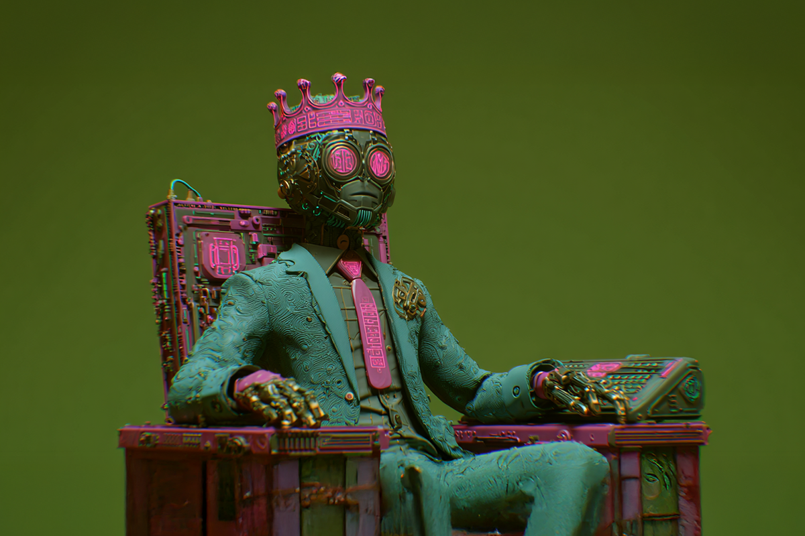

Los reyes de la IA
De la ciencia de datos al trono corporativo
De la ciencia de datos al trono corporativo

Basta un pequeño “scrolleo” en LinkedIn para encontrarlos. Son la nueva sensación del mundo laboral: los Chief AI Officer, o en español, Directores de Inteligencia Artificial. Un rol nuevo, que apareció casi tan rápido como surgió la inteligencia artificial.
¿Qué hacen? Planean y supervisan todo el uso de IA en las organizaciones, asegurándose de que esta tecnología se incluya en las labores diarias. Con casi un 72% de las empresas adoptando esta tecnología en alguna función de negocio —según estudios de McKinsey & Company— se hace imprescindible tener alguien que lidere los esfuerzos.
Acorde a la plataforma PagerDuty, un 48% de las empresas que pertenecen al Financial Times Stock Exchange (FTSE) ya tienen Chief AI Officers, con un 65% de contrataciones en los últimos dos años. La mitad de estos líderes son expertos en ciencia de datos y un 21% viene de firmas de consultoría. Solo un 4% tiene trayectoria académica, demostrando que la inteligencia artificial se vive más allá de la sala de clases.
Y si bien es un tema reciente, los estudios ya identifican dos arquetipos: el “Shepherd” y el “Savant”, algo así como el pastor y el erudito. El pastor prioriza la gobernanza, asegurándose de que el modelo de IA adhiera a normas de cumplimiento y estándares éticos, en cambio, el erudito prioriza la innovación, enfocándose en los últimos avances para tener ventaja tecnológica.
Si tienes una empresa o trabajas en una, seguro ya te preguntaste qué conviene más, si tener un director más pastor o más erudito. Si bien dependerá del estilo de cada compañía, si está claro que los que van por la innovación a toda costa corren más riesgos.
Así pasó con Microsoft y su apuesta agresiva por OpenAI, la colaboración que empezó en 2019 cuando la gran tecnológica invirtió 1 billón de dólares en la empresa y les ofreció su infraestructura basada en Azure. En total, invirtieron más de 13 mil millones de dólares hasta que surgieron tensiones: Microsoft quiso desarrollar sus propios modelos de IA y comenzaron a competir.
Ellos no lo han admitido, pero diversos medios han comentado sobre cómo la relación pasó de ser sinérgica a competitiva, y también sobre la creciente distancia entre los CEOs Sam Altman y Satya Nadella.

Todo esto es tan reciente, que vale la pena preguntarse si es algo que se va a mantener. Los de más trayectoria se acordarán cómo en los 2000 aparecieron los Chief Digital Officers, un puesto que después naturalmente se fue integrando hacia los CMO, o los Directores de Marketing.
Por ahora, solo sabemos que el boom es absolutamente real, porque LinkedIn y distintas consultoras reportan que es uno de los puestos con mayor crecimiento entre 2024 y 2025. Y obviamente, todo eso cambia los planes de profesionales jóvenes, porque si antes ser CMO o CFO era lo más aspiracional, ¿será este el nuevo trono al que muchos aspirarán?
La inteligencia artificial no solo cambia lo que hacemos, también cambia quién manda, y queramos o no, todo esto va a influir en la generación que está entrando al mundo laboral. No porque todos necesariamente quieran crear agentes o programar modelos de lenguaje, sino porque entender y dirigir IA será sinónimo de poder en la empresa.
La pregunta ahora no es si tu empresa tendrá un Chief AI Officer, sino qué tipo de líder será… ¿El tuyo ya está en camino?
 Tecnología
TecnologíaSi eres como yo y revisas TikTok e Instagram constantemente, te habrás dado cuenta de que estas redes son casi como un experimento social.
 Tecnología
TecnologíaHablamos mucho de inteligencia artificial. La tenemos integrada en nuestra vida, nos ayuda en nuestros trabajos y le preguntamos cosas de…
 Tecnología
TecnologíaDurante años hemos pensado en la inteligencia artificial como algo súper frío: servidores gigantes, computadores procesando datos y…